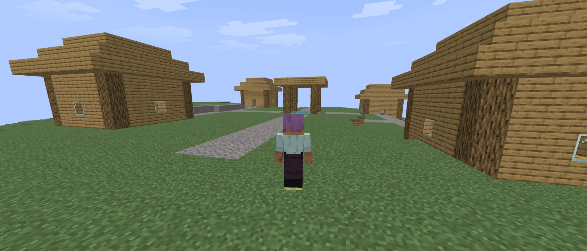

Vib Studios · Independent experiment · GPL-3.0
A Minecraft server
written entirely by AI
One prompt at a time. It connects, generates terrain, takes clients from Minecraft 1.8 through 26.1.2, and now has a real survival loop that persists across restarts.

Latest stable
v0.0.7
v0.0.7 is the current stable baseline.
01 — vib-MC
A survival loop,
one prompt at a time
Fourteen packages, zero humans. The whole thing was coaxed into existence with prompts, then patched with more prompts. Here is the honest state of it.

Handshake, login and spawn, from 1.8 to 26.1.2, minus 1.16, 1.16.1 and 1.19.3.
Multiplayer works, and the survival loop persists across restarts.
Procedural, seeded and deterministic. Biomes, caves, ores, trees and a village.
The interface exists. Build a plugin in the browser and it compiles to Java.
None yet. Players are the only thing the server sends.
Both real, both reachable. Build the portal yourself.
| Area | State | What that means |
|---|---|---|
| Protocol support | Working | 1.8 through 26.1.2, excluding 1.16, 1.16.1 and 1.19.3. Vanilla launcher profiles work; no mods, Forge or Fabric. |
| World generation | Working | Seeded terrain with biomes, caves, ores, trees and a spawn village. A blank seed means every new world is random. |
| Survival | Working | A real loop now exists and survives a server restart. Early development, so keep backups. |
| Plugin API | Working | Commands, listeners, players, worlds, blocks and packets live under net.vibmc.*. |
| Mobs | Not yet | Players are the only entities currently sent to clients. |
| Dimensions | Working | Nether and End are both reachable. The portal is yours to build. |
02 — Under the hood
Fourteen packages.
One jar.
No installer, no control panel, no account. Drop the jar in a folder and run it. Everything the server needs is inside that one file.
Server core
- Handshake & login
Players connect from a long list of client versions.
- Player manager
Sessions, positions, game modes and permissions.
- World manager
Worlds, chunks, blocks and deterministic generation.
- Tick loop
Start and end events that plugins can hook into.
World & play
- Biomes & caves
Seeded terrain with caves, ores and trees.
- Village at spawn
A generated place to start, not an empty plain.
- Nether & End
Both dimensions are reachable when you build the portal.
- Survival loop
Persistent state across restarts. Still early, still improving.
Tools for builders
- Console commands
/help, /tp, /gamemode, /give, /save-all and more.
- Plugin loader
Drop a jar into plugins/ and it loads on restart.
- Event system
Join, quit, chat and tick events, with cancellable chat.
- server.properties
Port, world name, seed, view distance and online mode.
03 — Extend it
A plugin is a jar,
a yml and one class
That is the whole contract. Extend VibMCPlugin, override onEnable(), compile against the vib-MC jar, then drop the result into plugins/.
name=MyPlugin
version=1.0.0
main=com.example.MyPlugin
description=Does a thing, sometimes
authors=youpublic class MyPlugin extends VibMCPlugin {
@Override
public void onEnable() {
getCommandManager().register(
new Command("gmc", "Switch to creative mode", "/gmc", null) {
@Override
public boolean execute(CommandSender sender, String[] args) {
if (!sender.isPlayer()) return false;
ServerPlayer player = sender.getPlayer();
player.setGameMode(GameMode.CREATIVE);
player.sendMessage("{\"text\":\"You are now in creative mode.\"}");
return true;
}
});
}
}public class JoinListener implements Listener {
@EventHandler
public void onJoin(PlayerJoinEvent event) {
event.getPlayer().sendMessage(
"{\"text\":\"Welcome to the vibe.\"}"
);
}
}
// in onEnable():
getPluginManager().registerEvents(new JoinListener(), this);Tabs are live. The copy button copies the file you are looking at.
| You get | From |
|---|---|
| register commands | getCommandManager().register(new Command(...)) |
| register listeners | getPluginManager().registerEvents(listener, this) |
| log lines | getLogger().info("...") |
| players | VibMC.getInstance().getPlayerManager() |
| worlds & blocks | VibMC.getInstance().getWorldManager() |
| permissions | getPluginManager().getPermissionManager() |
Everything lives in net.vibmc.*. The full reference is in the docs.
04 — Run it
Two commands.
Zero configuration.
The first run generates a server.properties, opens a plugins/ folder, binds to 0.0.0.0:25565, and gets out of your way.
$ java -jar vib-mc.jar
[INFO] Starting vib-MC v0.0.7
[INFO] Java 21.0.4, 2100 MB memory
[INFO] Generating world: default
[INFO] Terrain ready — village at spawn
[INFO] Loading plugins/ — 0 found
[INFO] Listening on 0.0.0.0:25565
Type /help for a list of commands.Click a command to copy it. The console accepts the same commands as players.
No paywall
Free, open source,
and yours to run
vib-MC is GPL-3.0-or-later. No signup, no control panel, no telemetry in this website. You download a jar and run it on your own machine.
No installer, no launcher, no extra files.
Worlds and logs stay under your control as the operator.
Fork it, patch it, write plugins. The source is there.
Questions
Before you download
The practical answers. The longer version lives in the docs.
Which Java version do I need?
Which Minecraft versions work?
Is there mob AI?
Can I write plugins?
plugins/ with a plugin.yml and a class extending VibMCPlugin. The docs include a working example and the full API surface.Where do I change the port or seed?
server.properties, generated on first run. It holds the port, world name, seed, view distance and online-mode switch. Defaults are port 25565, a blank seed, and online mode on.Should I back up my world?
Start the vibe in two commands
Download the jar, run it, point a supported client at port 25565. The village is already generating.